Evidencia real: historias y perspectivas de estudiantes que enfrentan la evaporación de sus conocimientos prácticos.
IngeniOsito
por Radiance
¿Qué es esto?

Este espacio es un centro de diagnóstico digital, diseñado para mapear un ciclo crítico en la formación universitaria: la pérdida sistemática de conocimiento práctico. Aquí buscamos entender por qué la experiencia técnica de los estudiantes no sobrevive al cierre del semestre.
Pregunta de investigación
¿Cómo podríamos preservar y aprovechar entre semestres el conocimiento práctico adquirido por los estudiantes?
Ideas clave
- Los aprendizajes prácticos se evaporan al cierre de cada semestre.
- Repetimos los mismos errores por falta de registros previos.
- Proyectos y prototipos valiosos se desintegran en el olvido.
- Actualmente nos enfocamos en analizar la raíz de este ciclo.
Lo que encontrarás aquí


Contraste de sistemas: una comparativa entre la fragmentación local y modelos de memoria colectiva funcional como el MIT.


Análisis experto: visiones técnicas sobre la importancia de la cultura de documentación y la gestión de activos en ingeniería.
Aviso Legal y Propiedad Intelectual: El contenido, marcas y logotipos presentados en este sitio web tienen fines estrictamente académicos y de investigación. Todos los derechos de autor de las historias, entrevistas y materiales citados pertenecen a sus respectivos autores. Las referencias a instituciones externas se utilizan bajo el principio de uso justo con fines educativos y de contraste informativo. Se prohíbe la reproducción total o parcial sin autorización previa de los integrantes del proyecto IngeniOsito.
¿Quiénes somos?
Catalina Vega Romero
catalinavero@unisabana.edu.coEstudiante de ingeniería informática de primer semestre. Nací en Bogotá. De mi carrera me gusta la programación, los computadores y los distintos campos de acción. Me gusta el skateboarding, la naturaleza, los deportes, los videojuegos, y mi color favorito es el rosa.
Color favorito: Rosa
Sofía Romero Díaz
sofiaromero@unisabana.edu.coEstudiante de ingeniería informática de primer semestre. Nací en Venezuela, pero llevo más de 10 años viviendo en Colombia. Mi parte favorita de mi carrera es la amplitud del campo laboral y las posibilidades de creación tecnológica que esta me permite. En mis tiempos libres me gusta jugar videojuegos y escuchar música. Mi color favorito es el lavanda.
Color favorito: Lavanda
David Díaz
daviddiaz@unisabana.edu.coEstudiante de ingeniería informática de primer semestre. Nací en Bucaramanga, Colombia. Mi parte favorita de la carrera es el desarrollo cognitivo que esta ofrece y las oportunidades que se brindan junto a la universidad. En mis tiempos libres, me gusta jugar fútbol, jugar videojuegos competitivos y escuchar Bad Bunny. Mi color favorito es el gris.
Color favorito: Gris
Experiencias
Esta sección analiza cómo se gestiona el conocimiento práctico en la Universidad de La Sabana y lo contrasta con referentes como el MIT, evidenciando problemas como la pérdida de información, la falta de continuidad en proyectos y el acceso fragmentado, así como posibles modelos para preservar y aprovechar mejor el aprendizaje.
¿Cómo podemos aprender del MIT para mejorar y aprovechar la experiencia en UniSabana?
Lugar de inmersión
Universidad de La Sabana

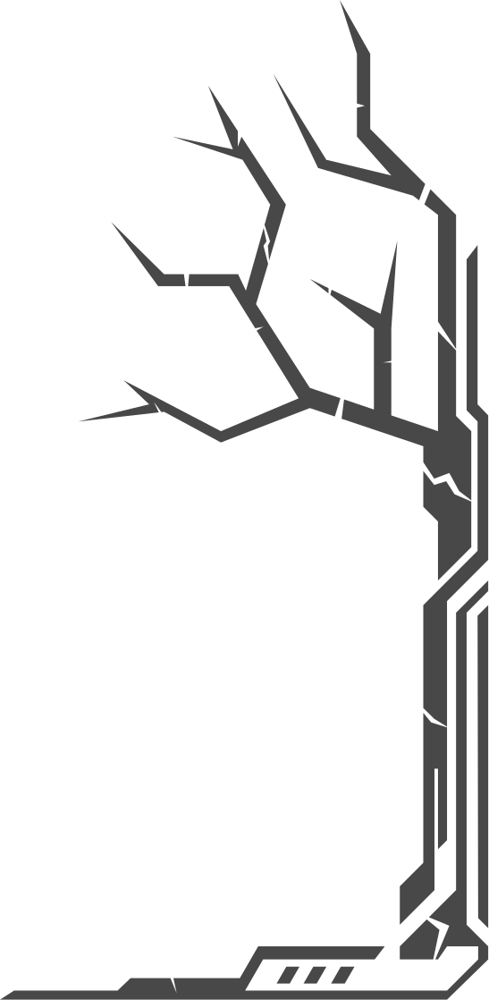
Lugar de inspiración
Massachusetts Institute of Technology

Perspectivas
Reunimos voces estudiantiles para entender las causas raíz del problema, qué se pierde entre semestres y cómo transformarlo en aprendizaje sostenible.
Voces de estudiantes
Guía de entrevistas (afectados)
Preguntas para entender cómo se vive la pérdida de conocimiento práctico y qué esperan los estudiantes.
- ¿En qué carrera y semestre estás actualmente?
- ¿Qué pasa con tus proyectos o aprendizajes prácticos cuando termina el semestre?
- ¿Alguna vez has sentido que se pierde información valiosa de un semestre a otro? ¿Puedes contar un ejemplo?
- ¿Te ha pasado que quisieras acceder a proyectos anteriores y no pudiste?
- ¿Cómo sueles guardar tus propios proyectos o aprendizajes importantes? Si tienes un lugar, coméntanos más sobre este.
- ¿Te gustaría tener acceso a un repositorio de proyectos anteriores? ¿Qué debería incluir?
- ¿Estarías dispuesto(a) a compartir tus proyectos para que otros estudiantes aprendan de ellos? ¿Bajo qué condiciones?
- Si pudieras cambiar algo para mejorar entre semestres, ¿cuál sería?
Entrevistas a estudiantes afectados
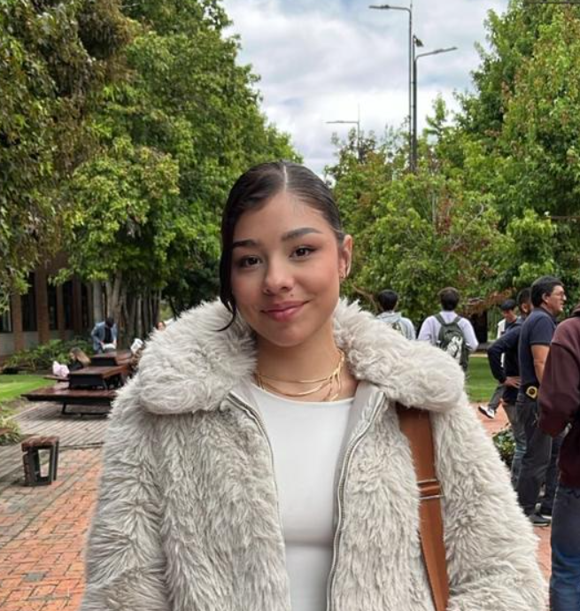
Ana (Entrevista 1)
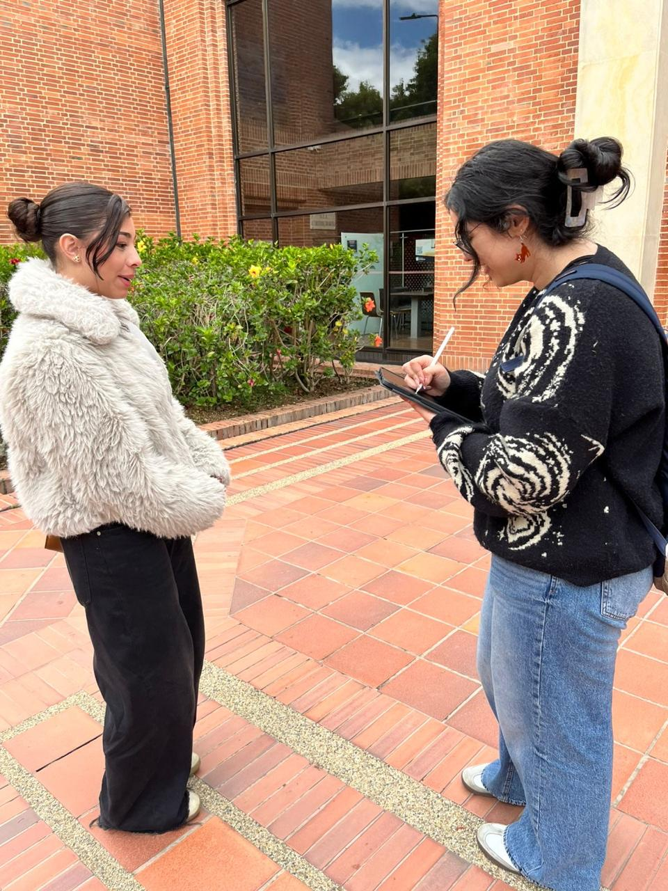
Antes cursó seis semestres de Comunicación Corporativa. Explica que entre semestres suele olvidar los temas vistos previamente y afirma: “Al final del día, lo que ocurre en clase se queda en clase”. Le gustaría contar con información de estudiantes de semestres anteriores sobre nuevas materias para tener claridad sobre lo que enfrentará en cada periodo académico. Su historia refleja cómo el aprendizaje suele quedarse en el aula y solo se utiliza en momentos puntuales.
Eduardo (Entrevista 2)
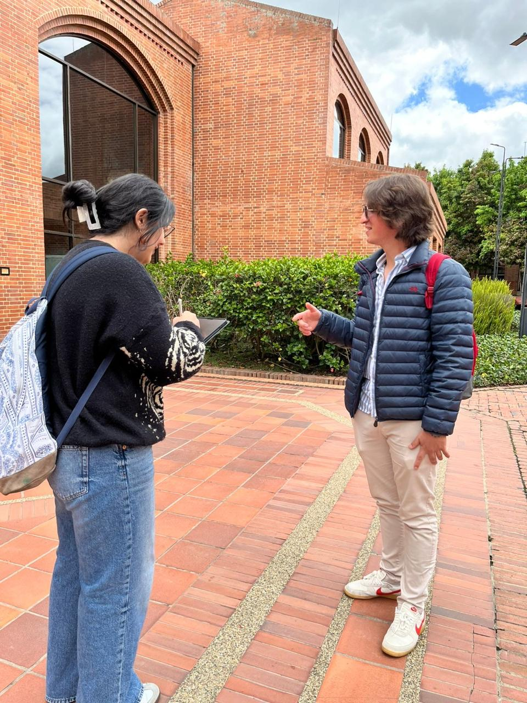
Comenta que en su carrera desarrollan proyectos aplicados en Excel y análisis de procesos. Sin embargo, después de entregar los trabajos finales y aprobar la materia, casi nunca vuelve a abrir esos archivos. En semestres posteriores ha tenido que reaprender herramientas que ya conocía porque no contaba con una referencia clara ni con un paso a paso de su trabajo anterior. Quisiera una herramienta que le ayude a evitar errores básicos repetitivos.
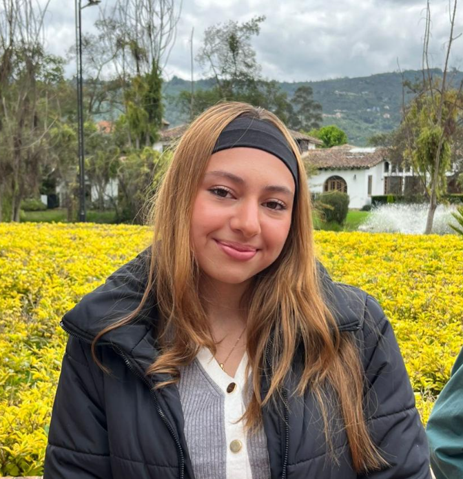
Valentina (Entrevista 3)
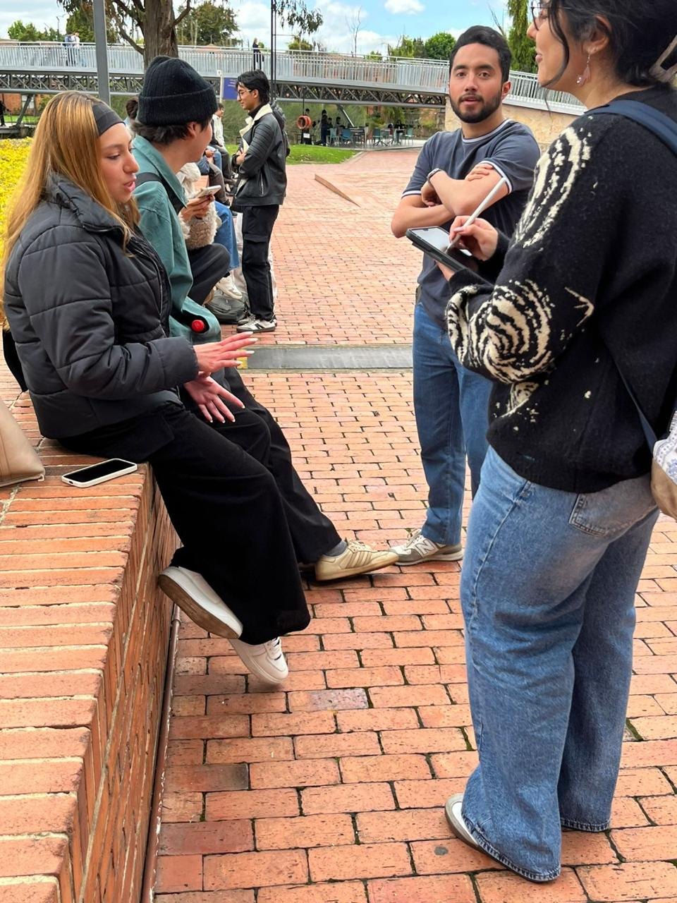
Explica que en su programa realizan estudios de caso y análisis de situaciones reales. Aunque guarda sus trabajos, siente que no hay continuidad entre un semestre y otro: “Cada profesor empieza como si uno no supiera nada. Y uno mismo siente que tiene que volver a arrancar desde cero”. Al iniciar semestre le ayuda acceder a ejemplos de trabajos anteriores para comprender el nivel esperado, pero no siempre es posible. También señala que olvida metodologías vistas antes cuando no las aplica de inmediato.
Juan David (Entrevista 4)
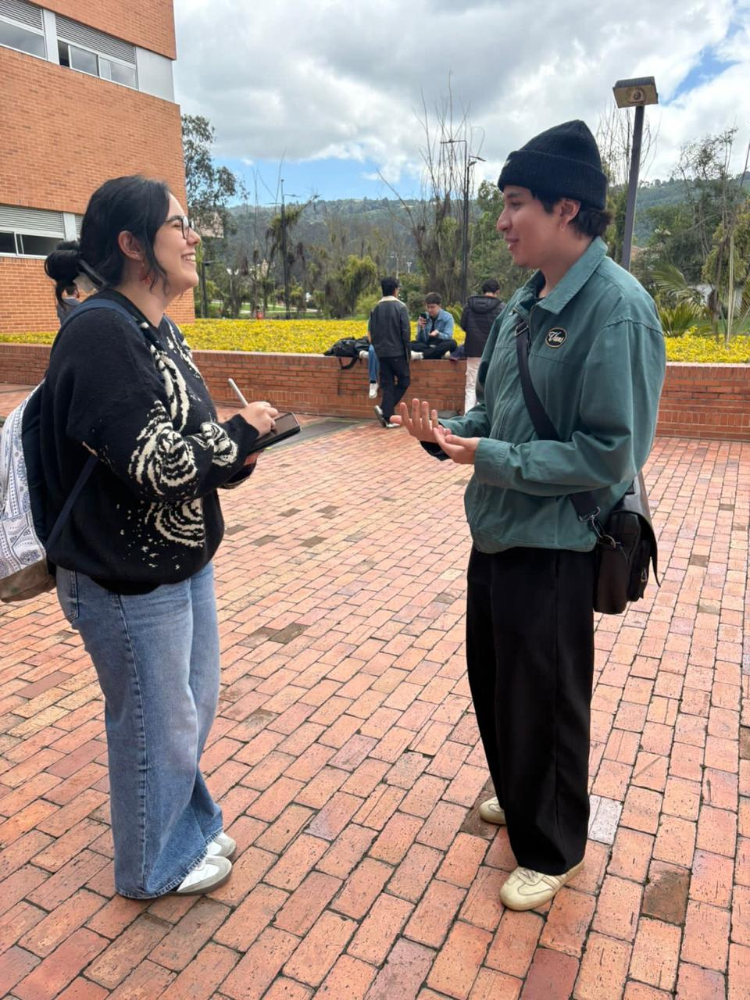
Cuenta que durante su carrera han desarrollado análisis financieros valiosos, pero estos proyectos no trascienden más allá de la nota final. Menciona que la mayoría de sus compañeros no documenta ni proyecta sus trabajos a futuro porque asumen que nadie los consultará después. Aun así, reconoce que esos mismos trabajos, con una documentación adecuada, le habrían resultado muy útiles en semestres posteriores.
Laura (Entrevista 5)
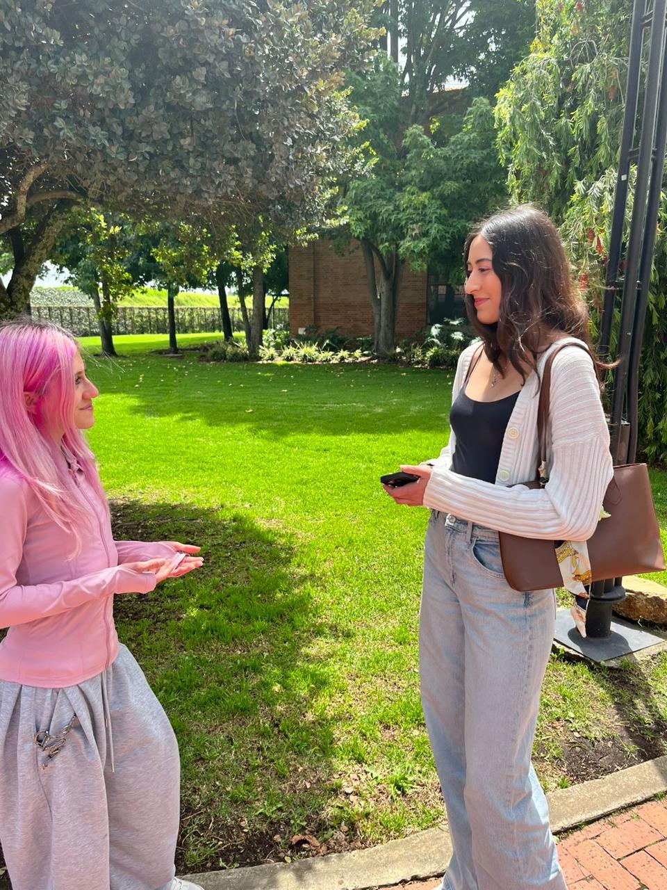
Comenta que en su carrera realiza análisis de jurisprudencia y ensayos argumentativos extensos. Sin embargo, percibe que el aprendizaje es muy momentáneo y resume su experiencia así: “Uno estudia muchísimo para el parcial, pero al semestre siguiente ya no recuerda los detalles”.
Experto
Para entender mejor las causas, el contexto, las consecuencias y otros factores del problema, consultamos a un experto.
Juan Pablo López
Magíster en Innovación Educativa mediada por TIC
Acerca de mí
Ingeniero Informático con Maestría en Innovación Educativa mediada por TIC, con más de 10 años de experiencia en el diseño, desarrollo e implementación de soluciones tecnológicas para el sector educativo y corporativo.
Especialista en creación de plataformas digitales de aprendizaje, gestión del conocimiento institucional, transformación digital académica y diseño de entornos virtuales de enseñanza.
Amplia experiencia liderando proyectos de innovación educativa, optimización de procesos académicos y desarrollo de sistemas colaborativos que permiten preservar y reutilizar el conocimiento práctico generado en instituciones de educación superior.
Experiencia laboral
-
Director de Innovación Tecnológica Educativa
- Diseño e implementación de repositorio institucional para proyectos estudiantiles.
- Desarrollo de plataforma de gestión del conocimiento académico.
- Integración de sistemas LMS con bases de datos institucionales.
- Liderazgo de equipos interdisciplinarios (docentes, desarrolladores y diseñadores).
- Implementación de metodologías de aprendizaje basado en proyectos (ABP).
- Reducción del 40% en pérdida de información académica entre semestres.
-
Arquitecto de Soluciones SCDTech
- Desarrollo de plataformas tipo LMS personalizadas.
- Implementación de sistemas de documentación colaborativa.
- Diseño de entornos virtuales interactivos.
- Migración de contenidos físicos a entornos digitales.
- Automatización de procesos académicos.
-
Ingeniero de Software
- Desarrollo de aplicaciones web.
- Diseño de bases de datos relacionales.
- Implementación de sistemas de gestión documental.
- Soporte técnico especializado y análisis de requerimientos.
Competencias técnicas
- Desarrollo Web (Java, Python, JavaScript).
- Bases de datos (MySQL, PostgreSQL).
- Arquitectura de Software.
- Gestión de LMS (Moodle, Canvas).
- Transformación Digital.
- Diseño Instruccional.
- Analítica de datos educativos.
- Implementación de repositorios institucionales.
¿Por qué escogimos este perfil experto?
Seleccionamos este perfil porque conecta tres dimensiones clave del reto: experiencia técnica en plataformas educativas, conocimiento de gestión del aprendizaje y visión de implementación institucional. Su trayectoria permite aterrizar propuestas viables para conservar y reutilizar conocimiento práctico entre semestres, cuidando aspectos de adopción, seguridad, autoría y continuidad académica.
Guía de entrevista
- Desde su experiencia, ¿cómo describiría la importancia de gestionar el conocimiento práctico en entornos universitarios?
- ¿Qué riesgos observa cuando las universidades no implementan sistemas de conservación del conocimiento entre semestres?
- ¿Cuáles cree que son las principales causas de la pérdida de conocimiento práctico en las instituciones de educación superior?
- ¿Qué impacto tiene esta situación en la calidad del aprendizaje y en la innovación académica?
- ¿Qué rol podrían desempeñar herramientas como plataformas LMS, repositorios institucionales, inteligencia artificial o sistemas colaborativos en este proceso?
- ¿Cómo garantizaría la seguridad, la autoría y la ética en el uso de proyectos académicos almacenados digitalmente?
- ¿Cómo motivar a los estudiantes para que compartan sus proyectos y aprendizajes de manera voluntaria?
- ¿Qué pasos recomendaría para diseñar e implementar un sistema institucional de gestión del conocimiento práctico?
- ¿Qué indicadores permitirían medir si la estrategia realmente está mejorando el aprendizaje?
- ¿Cómo imagina el futuro de la gestión del conocimiento en la educación superior con el avance de la tecnología?
Respuesta general
La gestión del conocimiento práctico es el puente entre lo que se aprende y lo que se retiene. Cuando no hay un sistema claro, la memoria institucional se fragmenta y cada cohorte repite esfuerzos. Más que soluciones inmediatas, se requiere una cultura de documentación, incentivos y una arquitectura digital que permita que el conocimiento circule con seguridad y contexto.
El foco debe estar en entender cómo se usa esa información, no solo en almacenarla. Plataformas integradas, protocolos de autoría y métricas de reutilización pueden ayudar a construir continuidad académica sin imponer cargas extra al estudiante.
Proceso
Línea de tiempo completa del proceso de investigación, inspiración, ideación y propuesta de valor.
Fase 1 · Contexto
Contexto problemática
En la universidad se desarrollan muchos proyectos y trabajos prácticos que dejan aprendizajes importantes. Sin embargo, la mayoría de este conocimiento se pierde al terminar cada semestre, ya que no existe una forma de conservarlo y aprovecharlo. Esto hace que los estudiantes repitan errores y no puedan apoyarse en experiencias previas.
¿Por qué es importante para la comunidad?
Problema bastante común para los estudiantes universitarios: perder todo el conocimiento una vez no sea necesario para un examen, trabajo o prueba en general. La pérdida de materiales de clase e información general puede generar altos niveles de estrés en los estudiantes. (Solo 1 slide).
¿Qué le emociona de la problemática?
Es un problema que afecta a todos los estudiantes sin importar la carrera, incluso a nosotros en un futuro cercano, y esto nos acerca más a nuestra comunidad estudiantil y nos muestra, desde el ámbito educativo, cuáles son los problemas, errores y triunfos de los estudiantes de semestres más avanzados para poder aprender de estos y aplicarlos en nuestra vida académica.
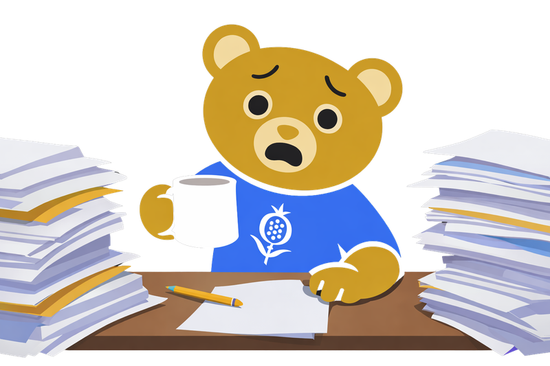
Fase 2 · Inmersión
Actividad de inmersión
Presentamos un parcial de cálculo integral de segundo semestre, sin saber nada específico de lo que estábamos haciendo, como si fuéramos un estudiante regresando de vacaciones. Fue una experiencia frustrante, ya que al no saber nada de lo que nos estábamos enfrentando, y al ver los resultados, estos fueron bastante humillantes. Nos puso en el lugar y el contexto de lo que pasan la mayoría de estudiantes entre semestres.
Fase 3 · Entrevistas
Hallazgos de entrevistas
A través de estas entrevistas, sacamos las ideas principales, repetidas, etc.
Fase 4 · Clusters
Ideas principales
-
1. Gestión Documental
Frase: Falta una forma clara y continua de guardar y organizar el conocimiento, por lo que la información se pierde, se repiten errores y no se aprovechan los trabajos.
Pregunta: ¿Cómo podríamos asegurar que los estudiantes mantengan y usen sus materiales a lo largo de varios semestres de manera natural?
-
2. Estrés por notas
Frase: La presión por las calificaciones genera desmotivación, ansiedad y sensación de atraso cuando no se perciben resultados claros del esfuerzo.
Pregunta: ¿Cómo podríamos cambiar la experiencia académica para que el progreso se sienta más visible y menos dependiente solo de la nota final?
-
3. Aprendizaje significativo
Frase: El aprendizaje se vuelve superficial cuando se estudia solo para aprobar y no se conecta con la práctica, la continuidad ni la experiencia previa.
Pregunta: ¿Cómo podríamos, a través de las actividades del curso, motivar a que el conocimiento se use y evolucione más allá de la entrega o el examen?
Fase 5 · Lluvia de ideas
Lluvia de ideas por oportunidad
¿Cómo podríamos asegurar que los estudiantes mantengan y usen sus materiales a lo largo de varios semestres de manera natural?
- Chatbot con IA (carpetas con los materiales organizados, consultar, ayudar a organizar, compatibilidad con realidad aumentada para escanear documentos y obtener propiedades en tiempo real).
- Wearable que escanea, se conecta a la red y guarda documentos.
- Compartir documentos entre estudiantes a través de grupos o chats especializados.
- Tamagotchi/Pou como virtual pet que motive a los estudiantes a guardar y revisar sus documentos.
- Sistema de premios (tipo lo que tiene Edge) por guardar documentos.
- Otro tipo de mascota virtual que recuerde guardar cosas.
- Asistente virtual con IA que ayude automáticamente a guardar y categorizar todos los trabajos, documentos y actividades que realizan los estudiantes.
- Videojuego relacionado con guardar documentos, como una manera interactiva para que no parezca un trabajo tedioso guardarlos.
¿Cómo podríamos cambiar la experiencia académica para que el progreso se sienta más visible?
- Una pantalla que muestre el progreso del curso en tiempo real, como una barra de progreso que puede estar en los juegos.
- Reportes continuos generados automáticamente luego de cada actividad, por alumno, que digan cuáles son sus mejores competencias y en qué puede mejorar en tiempo real.
- Un tipo de juego/virtual pet con IA integrada que, con el progreso en los temas (no en notas) y las actividades, pueda hacer recomendaciones en tiempo real sobre qué debería hacer, tipo flashcards, quizzes o algo que se sienta como un juego.
¿Cómo podríamos, a través de las actividades del curso, motivar a que el conocimiento se use y evolucione más allá de la entrega o el examen?
- A través de un programa mostrar de manera didáctica para qué sirve ese tema, conocimiento o actividad en el mundo real y relacionado con su carrera.
- Cada tema que se aprende, cargarlo a una IA para que muestre su uso útil, cómo está avanzando ese tema hoy en día y la información importante relacionada.
- Actividades de curso que se realicen con realidad aumentada para ver un uso más práctico de los temas.
Fase 6 · Prueba de valor
Formato prueba de valor
Desafío de diseño: ¿Cómo podríamos preservar y aprovechar entre semestres el conocimiento práctico adquirido por los estudiantes?
Oportunidades de diseño
- ¿Cómo podríamos asegurar que los estudiantes mantengan y usen sus materiales a lo largo de varios semestres de manera natural?
- ¿Cómo podríamos cambiar la experiencia académica para que el progreso se sienta más visible y menos dependiente solo de la nota final?
- ¿Cómo podríamos, a través de las actividades del curso, motivar a que el conocimiento se use y evolucione más allá de la entrega o el examen?
Idea recogida: Post-it.
Descripción de la idea: IngeniOsito, una plataforma con inteligencia artificial que actúa como un espacio académico donde los estudiantes almacenan, organizan y realizan sus trabajos y conocimientos. Mediante un chatbot, facilita consultas, conecta contenidos entre materias y promueve el aprendizaje continuo.
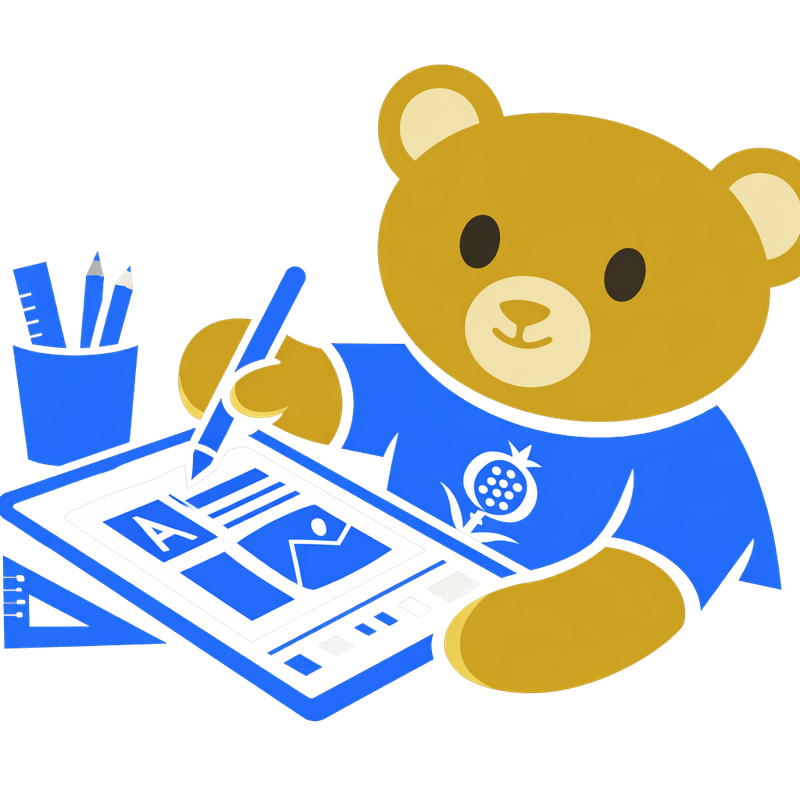
Fase 7 · Solución
¿Cómo resolverá esta idea el desafío de diseño?
IngeniOsito resuelve el desafío de diseño al permitir preservar y aprovechar el conocimiento práctico de los estudiantes entre semestres mediante una plataforma de espacio académico que recoge y junta sus trabajos, proyectos y recursos, evitando su pérdida y facilitando su reutilización. A través de un chatbot con inteligencia artificial, los estudiantes pueden consultar conocimientos adquiridos en nuevas asignaturas o contextos, mientras la IA sugiere conexiones entre trabajos y promueve la mejora continua de estos. De esta manera, el aprendizaje deja de ser temporal, convirtiéndose en un proceso combinado, accesible y evolutivo.
IngeniOsito · Innovación
- Virtual pet.
- Conexión con el entorno académico, no solo material.
- Un sistema un poco más global y dinámico.
- Plan de estudios, flashcards, quizzes.
- Planta virtual reminders.
- Recomendaciones basadas en notas, experiencias, resultados, etc.
- Progreso por temas, ver cómo evoluciona el estudiante durante su vida académica.
- Motivación implícita personal.
- Desarrollo de ejercicios de práctica enfocados en debilidades y basados en estructuras similares a los vistos en talleres o quices desarrollados por el profesor.
- Gemelo virtual: teniendo en cuenta cómo respondes, te muestra posibles errores que puedes cometer vs. cómo respondería un experto.
- Muestra tu progreso académico por semestres, incluso por materia.
- Test de método de estudio ideal.
- Focus timer.
- Usuario decide si dejar sus stats públicas o privadas.
- Conexión entre estudiantes dependiendo de sus stats, habilidades, competencias, etc.
- Repositorio comunitario.
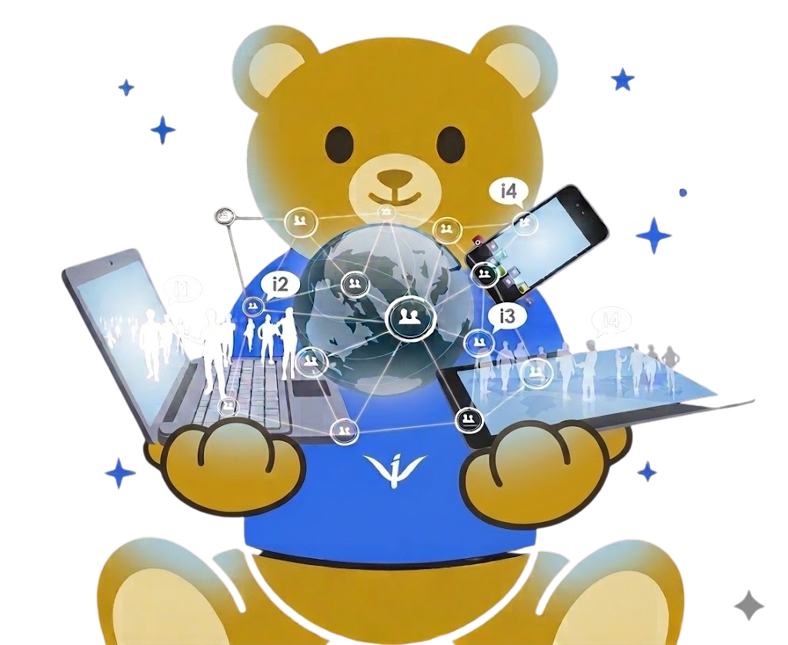
Fase 8 · Story board
Story board
Con todas las ideas, información y contexto recogidos, creamos un storyboard para hacer una mejor visualización del problema y de su posible solución.
Estrategias
Este cronograma presenta las actividades, acciones y planes proyectados para orientar la planeación, creación y publicación de IngeniOsito de manera clara, organizada y progresiva.
Puntos críticos del storyboard
Cada viñeta reúne el momento narrativo, el obstáculo principal y una forma concreta de comprobarlo con estudiantes.
Viñeta 2
Casoda termina su primer semestre segura de su conocimiento, pero también agotada física y mentalmente.
Obstáculo: ¿Los estudiantes realmente sienten que necesitan apoyo desde el inicio?
¿Cómo podríamos saberlo o probarlo? Realizar encuestas y entrevistas a estudiantes de primer semestre para identificar si perciben dificultades y buscan ayuda.
Viñeta 3
Al salir, decide aprovechar sus vacaciones al máximo, deja lo académico a un lado y disfruta su tiempo libre.
Obstáculo: ¿Los estudiantes usarán la plataforma en su tiempo libre?
¿Cómo podríamos saberlo o probarlo? Simular un periodo de vacaciones y medir cuántas veces acceden voluntariamente al prototipo, sin obligación.
Viñeta 4
Terminan las vacaciones y Casoda se siente muy nerviosa porque siente que durante su descanso olvidó todo lo del semestre pasado.
Obstáculo: ¿Los estudiantes reconocen que necesitan ayuda?
¿Cómo podríamos saberlo o probarlo? Presentar una situación similar a estudiantes de cualquier semestre o carrera, preguntarles mediante una entrevista o encuesta qué harían y observar si buscarían soluciones.
Viñeta 5
En clase se siente abrumada por la cantidad de información y temas. No entiende y, al intentar preguntarles a sus profesores, ellos insisten en que muchos de esos temas se vieron el semestre pasado.
Obstáculo: ¿El problema es la falta de herramientas o de comprensión?
¿Cómo podríamos saberlo o probarlo? Comparar los efectos de la app con grupos de estudiantes, algunos usándola y otros sin ella, para observar si IngeniOsito mejora su comprensión.
Viñeta 6
Desesperada, busca e intenta estudiar con documentos, libros, videos y otros recursos, pero entre tanto texto y fórmulas se siente muy perdida. También busca sus apuntes, pero no logra encontrarlos.
Obstáculo: ¿Preferirán esta plataforma sobre otras opciones como Google?
¿Cómo podríamos saberlo o probarlo? Darles tareas a los estudiantes, observar qué herramientas utilizan para completarlas y preguntarles por qué prefieren esas herramientas.
Viñeta 7
Casoda adopta otro enfoque y, al investigar en internet, encuentra a IngeniOsito: una plataforma integrada con IA, organización, diversión y mucho más, todo conectado en su entorno académico.
Obstáculo: ¿La plataforma es fácil de usar desde el primer momento?
¿Cómo podríamos saberlo o probarlo? Mostrarles el prototipo a los estudiantes sin ninguna explicación, proponerles una tarea y observar si lo usan correctamente.
Viñeta 8
IngeniOsito ofrece un solo espacio tecnológico con funciones de fácil acceso, conectadas entre sí para organizar el estudio y mantener la información académica disponible.
Obstáculo: ¿La integración tecnológica de las funciones se siente clara, rápida y útil dentro de un mismo espacio?
¿Cómo podríamos saberlo o probarlo? Pedirles a los estudiantes que completen tareas específicas que combinen varias funciones de IngeniOsito y evaluar si logran realizarlas fácilmente, sin perderse entre pantallas o procesos.
Viñeta 9
IngeniOsito cuenta con IA integrada que puede servir como asistente, acompañante, profesor, amigo y muchas cosas más.
Obstáculo: ¿El chatbot con IA responde correctamente?
¿Cómo podríamos saberlo o probarlo? Simular preguntas frecuentes y evaluar si las respuestas de IngeniOsito son útiles o generan confusión en los usuarios.
Viñeta 10
Guarda y accede fácilmente a tus archivos, documentos, trabajos y más en un mismo espacio. También puedes hacer parte del repositorio comunitario como visitante o contribuidor.
Obstáculo: ¿Confiarán en la plataforma para guardar información?
¿Cómo podríamos saberlo o probarlo? Hacer una prueba, observar si los estudiantes guardan archivos y preguntarles su nivel de confianza.
Viñeta 11
Si los métodos técnicos o formales no funcionan, IngeniOsito propone una nueva forma de aprender y dinamizar la vida académica: visualizar el progreso por niveles, crear un personaje y fortalecer habilidades.
Obstáculo: ¿La mejora en el rendimiento se mantiene en el tiempo?
¿Cómo podríamos saberlo o probarlo? Hacer seguimiento durante varias semanas a los estudiantes que usan IngeniOsito y analizar si su progreso es continuo.
Viñeta 12
Estudiar no tiene por qué sentirse como un desorden, un castigo o una incomodidad; debe ser una experiencia creativa, abierta y adaptable a cada estudiante.
Obstáculo: ¿Los estudiantes seguirán usando la app a largo plazo?
¿Cómo podríamos saberlo o probarlo? Medir la frecuencia de uso del prototipo sin recordatorios durante un periodo de tiempo.
Descripción (Evolución)
IngeniOsito 2.0:
IngeniOsito resuelve el desafío de diseño al permitir preservar y aprovechar el conocimiento práctico de los estudiantes entre semestres mediante una plataforma de espacio académico que recoge y junta sus trabajos, proyectos y recursos, evitando su pérdida y facilitando su reutilización, no solo como repositorio sino como un sistema activo de aprendizaje. A través de un chatbot con inteligencia artificial, estilo virtual pet con recordatorios que fomentan la motivación, también emplea herramientas como flashcards, quizzes, plan de estudios personalizado y focus timer, que fortalecen los hábitos de estudio y permiten visualizar el progreso por temas, materias y semestres. Los estudiantes pueden consultar conocimientos adquiridos en nuevas asignaturas o contextos, mientras la IA sugiere conexiones entre trabajos, identifica debilidades, recomienda ejercicios personalizados y promueve la mejora continua de estos. De esta manera, el aprendizaje deja de ser temporal, convirtiéndose en un proceso combinado, accesible y evolutivo, que se adapta al progreso del estudiante a lo largo de su vida académica.
IngeniOsito 3.0
IngeniOsito resuelve el desafío de diseño al permitir preservar y aprovechar el conocimiento práctico de los estudiantes entre semestres mediante una plataforma de espacio académico que recoge y junta sus trabajos, proyectos y recursos, evitando su pérdida y facilitando su reutilización, no solo como repositorio sino como un sistema activo de aprendizaje. A través de un chatbot con inteligencia artificial, estilo virtual pet con recordatorios que fomentan la motivación, también emplea herramientas como flashcards, quizzes, plan de estudios personalizado y focus timer, que fortalecen los hábitos de estudio y permiten visualizar el progreso por temas, materias y semestres. Para aumentar la exposición inicial y la seguridad, el chatbot de inteligencia artificial de IngeniOsito es más intuitivo y guiado para la comodidad de los usuarios, para que desde el primer momento no se sientan abrumados por la plataforma. Los estudiantes pueden consultar conocimientos adquiridos en nuevas asignaturas o contextos, mientras la IA sugiere conexiones entre trabajos, identifica debilidades y recomienda ejercicios personalizados, y promueve la mejora continua de estos, lo que resultará en que el aprendizaje sea fácil y dinámico, ya que esto ayudaría a los estudiantes a aprender más rápido y cambiar si no lo hicieron y, de esta manera, el aprendizaje deja de ser temporal, convirtiéndose en un proceso combinado, accesible y evolutivo, que se adapta al progreso del estudiante a lo largo de su vida académica. Uno de los puntos más atractivos de IngeniOsito son los aspectos de juego evolutivo (jardín virtual y virtual pet), ya que motiva a estudiar de manera divertida, para que esta sea un poco mayor que el aprendizaje. Otro aspecto importante de IngeniOsito es asegurar que los estudiantes se sientan seguros a la hora de subir sus documentos, y el plan es lograrlo con un blockchain para que la información subida por los estudiantes esté respaldada por distintos bloques. Por supuesto, IngeniOsito pasa de ser un profesor a un asistente académico inteligente para acompañar al estudiante y contribuir con él en cada paso de su proceso de aprendizaje.
Cronograma
Desliza horizontalmente y selecciona una imagen para ampliarla.
Modelo de negocio Canvas
Selecciona la imagen para ampliarla.
Simulación interactiva
Prototipo
Explora cómo IngeniOsito guiará a cada estudiante desde su registro inicial hasta un tablero personalizado con calendario, repositorio, asistente, herramientas, jardín virtual y perfil académico.
Conoce a IngeniOsito
Una plataforma que te ayuda a guardar tus materiales, entender tu estilo de estudio y llevar tu progreso de una manera creativa y divertida.
¡Bienvenido!
Regístrate
Iniciar sesión
Cuestionario
Deja que IngeniOsito aprenda más de ti respondiendo estas preguntas sencillas.

Resultado
📅 Estudiante organizado
Tu estilo: eres disciplinado y planificado.
Riesgo: puedes sobrecargarte o ser muy rígido.
🧠 ¿Cómo es este tipo de estudiante?
Es alguien que anticipa tareas, registra avances y necesita una plataforma que mantenga sus materiales claros, conectados y disponibles.
Calendario
LuMaMiJuViSáDo
567891011
12131415161718
Trabajos pendientes:
Quiz de cálculo integral · 7 de mayo
Taller de estructuras y algoritmos · 20 de mayo
IngeniOsito recomienda:
Repasar arreglos en Java y Python con práctica guiada.
Subir las notas del quiz de probabilidad y estadística.
Aprendizajes
Visualiza hallazgos clave y patrones detectados en la investigación.
Mapa de empatía
¿Qué piensa y siente?
- Siente que no tiene tiempo para nada entre el estudio y la vida social.
- Está ocupado la mayor parte de su día estudiando para todas sus materias, así que no le da tiempo de repasar todos los días.
- Quiere buscar la manera de tener todos sus apuntes, cuestionarios, talleres y trabajo en clase en un mismo lugar.
¿Qué ve?
- Ve videos en internet de cuál es la mejor manera de estudiar para no olvidar lo que vio durante el semestre.
- Le salen publicaciones en redes sociales de personas que estudian la misma carrera o una parecida, que están estudiando todos los días y guardan todo.
¿Qué oye?
- Sus amigos le dicen que lo más importante es pasar la materia, y que guardar los materiales de clase una vez se acaba el semestre no importa.
- Su papá le aconseja que todos sus materiales de clase son importantes y que debería guardar esos materiales, aunque ya haya pasado de semestre.
¿Qué dice y hace?
- Solo estudia para parciales.
- Va a iniciar su quinto semestre y no se acuerda de nada de lo que vio el semestre pasado, pero no sabe dónde tiene todos sus apuntes.
- Dice que este semestre quiere cambiar la manera en la que archiva toda su información, pero no sabe cómo hacerlo.
Luis
Estudiante de Ingeniería Mecánica
Pains
- No quiere que le pase como en semestres anteriores, ya que en el primer corte siempre se siente perdido.
- Le preocupa que, durante el tiempo que pasa poniéndose al día, se atrase con los nuevos temas.
Gains
- Tener todos sus materiales de clase centralizados y más accesibles.
- No tener que preocuparse si se olvidó de algo, ya que lo puede encontrar fácilmente.
Hallazgos por frente
Experiencia
¿Qué aprendimos de esta experiencia?
- El conocimiento práctico se diluye sin rituales de cierre y documentación.
- La presión académica desplaza la reflexión y la consolidación.
- El valor del aprendizaje se potencia cuando es visible y reutilizable.
Entrevistas
¿Qué aprendimos de las entrevistas?
- Los estudiantes desean acceso a ejemplos reales y cercanos.
- Existe frustración por la repetición de errores pasados.
- La mayoría guarda proyectos de forma dispersa y personal.
Perspectivas
¿Qué aprendimos de las diferentes perspectivas?
- Los estudiantes priorizan accesibilidad y utilidad inmediata.
- El experto destaca cultura, protocolos y métricas de uso.
- El problema es tanto técnico como humano y organizacional.
Lugares
¿Qué aprendimos de los lugares?
- UniSabana sufre fragmentación y baja continuidad académica.
- MIT demuestra que los repositorios abiertos generan memoria colectiva.
- La clave está en centralizar, versionar y mantener vigente.
Conclusión general
El conocimiento práctico necesita continuidad. Sin espacios de archivo, reflexión y acceso, cada semestre reinicia el aprendizaje. El hallazgo central es que el problema no es falta de esfuerzo, sino ausencia de una arquitectura compartida que vuelva lo aprendido visible, consultable y evolutivo.